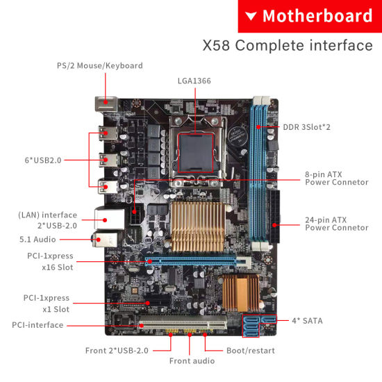
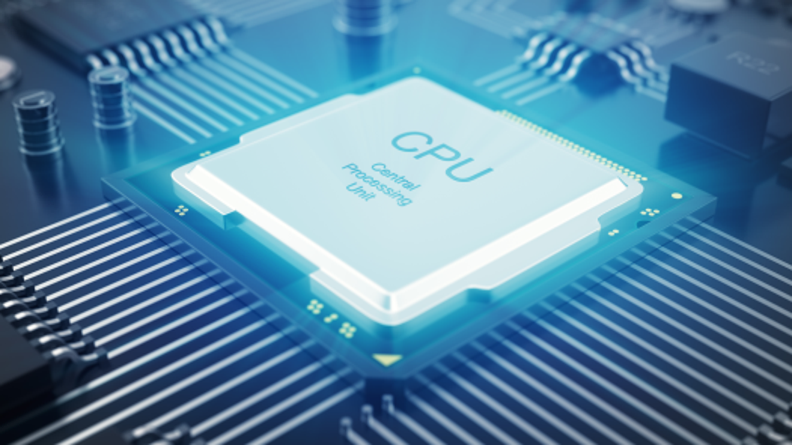
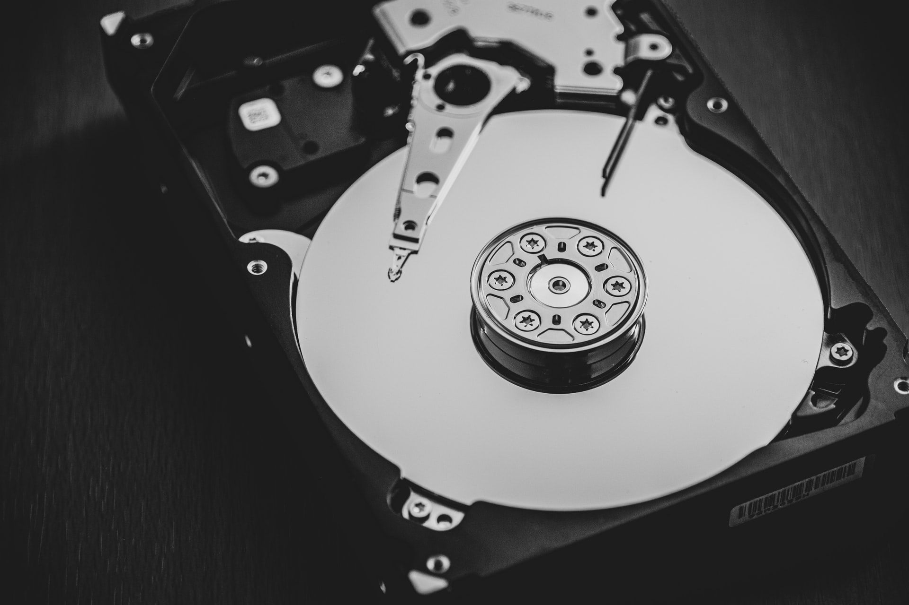
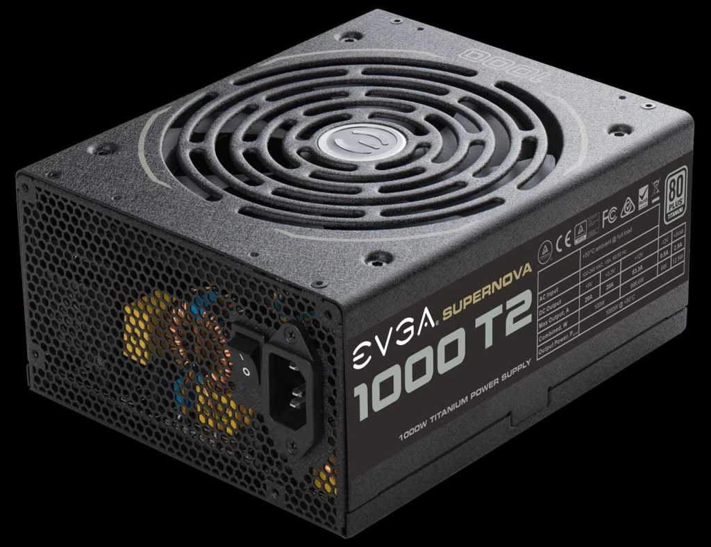
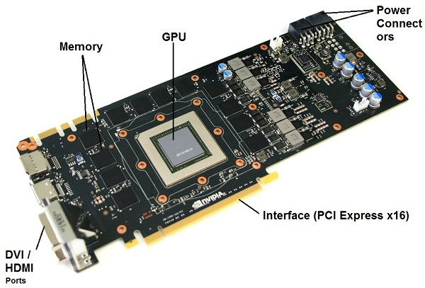

Computer Hardware

Def:The System itself is the inner makings of the computer contained within the Chassis. The system consists of a combination of hardware and software coexisting in a symbiotic relationship. That is to use the hardware, a piece of software such as an Operating System (OS) or device driver is needed; vice versa, in order to use a piece of software, existence of compatible hardware is needed. A System must utilize 6 categories of components to classify it as a computer system.
Here are some common individual computer hardware components that you'll often find inside a modern computer. These parts are almost always found inside the computer's case, so you won't see them unless you open the computer:
- Motherboard
- CPU
- Power Supply
- GPU
- Internal Memory
The Motherboard:
Even though the processor is the brain of the operation, without a Motherboard (MB) all you will have is a cluster of components, which do not fit each other. Consider the motherboard as the skeleton or a computer where parts, similar to human organs, fit within it.
Although different manufacturers build different types of motherboards in a variety of sizes, shapes and integrated features, all motherboards share some basic elements. All motherboards must include an integrated chipset, which establishes the types of components that are compatible with it. All MBs must accommodate at least 1 CPU, capabilities for some type storage device, as well as some common input/output devices such as keyboard and mouse which we’ll discussed later. Every motherboard includes BIOS T (Basic Input/output System) chip, which performs system checks at boot-up time of the system. The BIOS also provides the means of communication between the processor and installed peripherals. Most BIOSes allow a limited amount of customization such as power-saving functions and even password protection for the system even before the operating system (OS) loads as a method of protecting your computer from unauthorized users.
CPU:
Also known as, “The Processor”, the CPU receives the user’s instructions from the connected input devices, processes it and sends processed data to the appropriate components and output devices. The CPU is where all complex calculations are carried out, as such the faster the CPU the quicker the programs will function and respond. Intel’s Core™ i7 Extreme Edition 10-core processors, AMD’s FX series 8-cores processors, AMD’s Phenom™ X4 Quad-Core are amongst the fastest processors on the market today. If you are looking for blazing fast speed then you certainly want one of these processors. Without the CPU, the whole computer is rendered useless
Like any piece of technology, CPUs come in all shape and sizes. There are 3 major aspects to any CPU:
- Type: There are different standards for a Processor to select from. Some of the most popular ones are Intel, AMD, and Motorola.
- Class: Different classes have different minimum and maximum speeds. Some examples of Class are: i7, i5, i3, Celeron, Xeon, and Athlon.
- Speed: Measured in Hertz, it is the speed at which calculations are processed. Examples of values are 4.0GHz and 1.2GHz
Internal Memory:
Every time an application is opened, the CPU allocates a specified amount of available RAM space to provide faster reaction time to user commands within that application. RAM is a temporary storage space meaning once the application is done using the RAM space, it will be once again available to be used by the next application that needs it. Once RAM’s capacity is reached, the processor redirects its focus to available HDD space also referred to as Virtual Memory (VM). It should be pointed out that HDDs are slower than RAM and as such once your computer resorts to Virtual Memory, applications begin to slow down. As a rule of thumb, more RAM allows you to run more applications simultaneously without slowing your system’s performance.
Power Supply:
A power supply is a hardware component that supplies power to an electrical device. It receives power from an electrical outlet and converts the current from AC (alternating current) to DC (direct current), which is what the computer requires. It also regulates the voltage to an adequate amount, which allows the computer to run smoothly without overheating. The power supply an integral part of any computer and must function correctly for the rest of the components to work. You can locate the power supply on a system unit by simply finding the input where the power cord is plugged in. Without opening your computer, this is typically the only part of the power supply you will see. If you were to remove the power supply, it would look like a metal box with a fan inside and some cables attached to it. Of course, you should never have to remove the power supply, so it's best to leave it in the case.  While most computers have internal power supplies, many electronic devices use external ones. For example, some monitors and external hard drives have power supplies that reside outside the main unit. These power supplies are connected directly to the cable that plugs into the wall. They often include another cable that connects the device to the power supply. Some power supplies, often called "AC adaptors," are connected directly to the plug (which can make them difficult to plug in where space is limited). Both of these designs allow the main device to be smaller or sleeker by moving the power supply outside the unit. Since the power supply is the first place an electronic device receives electricity, it is also the most vulnerable to power surges and spikes. Therefore, power supplies are designed to handle fluctuations in electrical current and still provide a regulated or consistent power output. Some include fuses that will blow if the surge is too great, protecting the rest of the equipment. After all, it is much cheaper to replace a power supply than an entire computer. Still, it is wise to connect all electronics to a surge protector or UPS to keep them from being damaged by electrical surges.
GPU:
The GPU is often integrated onto the motherboard or as an add-on video board inserted into motherboard slot connector. It give the system display capabilities. The video adapter turns the processed and translated user input, if any, along with any other information provided by an application and turns it into a video signal to be sent to a display device. Like any data in need of processing, this is done by utilizing the combined usage of system’ CPU and memory. More recent video adapters include onboard processor and memory to increase graphical processes such as those needed in games and applications used by photographers. Integrated video cards come with a blue jack to connect the monitor. Some add-on video adapters also include S-Video, Digital Video Input (DVI) and even Cable TV connectors.